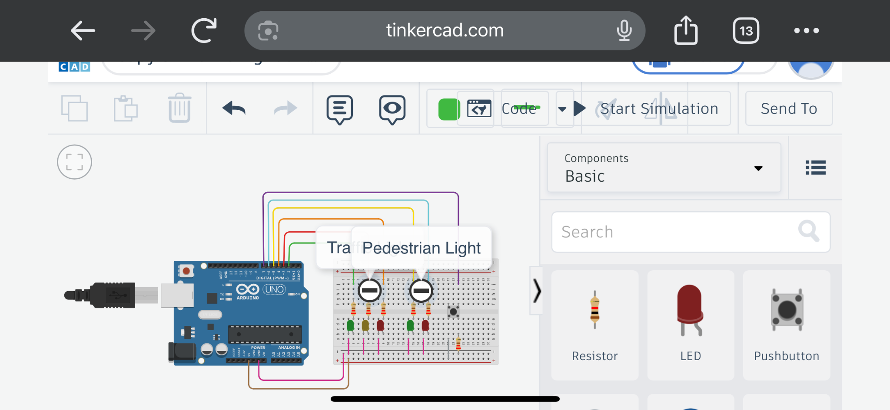
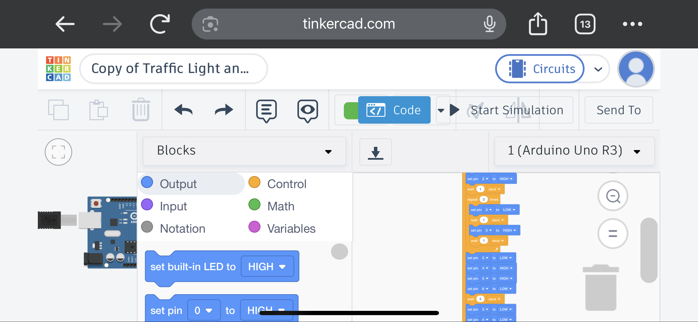

REAL PROJECT • TINKERCAD
Smart Traffic Light System
An Arduino-based traffic light project developed in Tinkercad. The system combines vehicle traffic lights with pedestrian controls, an ultrasonic distance sensor, pedestrian button and buzzer.
Platform
Tinkercad
Controller
Arduino Uno
Completed
August 2026